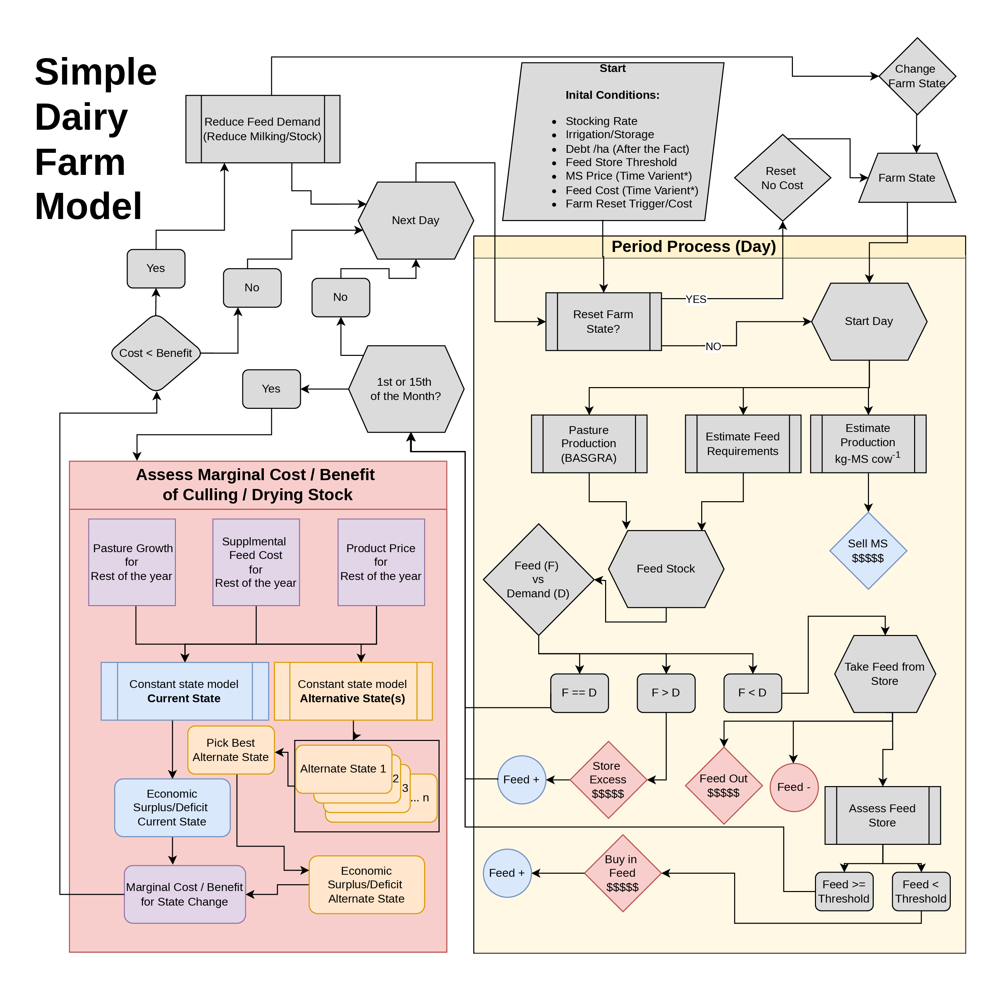

Kо̄manawa-simple-farm-model#
- Author:
Matt Dumont
- copyright:
2024, Kо̄manawa Solutions Ltd.
- Version:
v0.1.2
- Date:
Apr 20, 2026
General Description#
This simple farm model is an economic / metabolic farm model that is used to estimate economic outputs from pasture production inputs. The packaged has a base farm class (BaseSimpleFarmModel), which handles much of the base logic of the model and can then be subclassed to create specific farm types.
BaseSimpleFarmModel process includes:
The run_model method in the BaseSimpleFarmModel class is responsible for running the farm economic model. Here’s a step-by-step description of the process. The model is run on a daily timestep with an assumed 365 day year:
The method first checks if the model has already been run. If it has, it raises an error, pass, or rerun (see run_model docs).
- It then enters a loop that iterates over each month in the model’s timeline. For each month, it performs the following steps:
It sets the start of day values for current money, current feed, and current state.
It allows for supplemental actions at the start of the day, if needed. These can be set in the supplmental_action_first method.
It calculates the pasture growth and converts it to ME (MJ/ha). Both values are stored.
It calculates the feed needed for the cattle.
It identifies surplus homegrown feed, deficit feed, and perfect feed scenarios. By applying the feed efficiency (homegrown_efficiency and supplemental_efficiency). If there is surplus homegrown it stores the surplus (which includes a cost per MJ), if supplemental feed (MJ) is needed feeds out the supplemental needed (including supplemental efficiency), which reduces the feed store and incurs a feed out cost.
It calculates the product produced and stores it.
It calculates the profit from selling the product and adds it to the current money.
It assesses the feed store, imports feed if needed, and changes the state of the farm.
It allows for supplemental actions at the end of the day, if needed. These can be set in the supplmental_action_last method.
If it’s the start of a new year, it resets the state.
Finally, it sets the key values for the current state, feed, and money.
After the loop, it sets the _run attribute to True, indicating that the model has been run.
Description of how to subclass the BaseSimpleFarmModel is given in the docstring for the class.
Simple Dairy Farm Model#
The Simple Dairy Farm Model is a specific implementation of the BaseSimpleFarmModel that was used to assess the economic viability of typological dairy farms in Waimakariri region of New Zealand under high dimensional climate variability scenarios. The base logic is the same as the BaseSimpleFarmModel. There is also a variant that implements a S-curve cost function for importing additional feel. This variant allows for a non-hard limit on feed imports associated with feed availability limitations.
Our farm model is a simple, per-hectare, daily metabolic model that simulates: the milk production of a dairy herd, the feed demand of the herd, and the associated replacement stock (typically 22%) for one or more (July to June). Dairy farms typically report stocking rates as the milking platform stocking rate. Our model includes the full farm, therefore we convert the milking platform stocking rate to a full farm stocking rate based on livestock unit equivalents. The variable inputs to the farm economic model are: the pasture growth (kg DM day-1), starting feed store (MJ ME ha-1), stock rate, milk, and feed prices. The model logic is diagrammed in [fig:farm_model].
{kind=link}

Lactating cows are assumed to produce 559 kg milk solids (MS) year-1, with a metabolic demand of 123.19 MJ ME kgMS-1. Replacement stock and non-lactating stock are assumed to have a metabolic demand of 70.4 and 66.0 – 102.3 MJ ME day-1, respectively. The metabolic demands are based on the reported metabolic requirements and production statistics for North Canterbury Farms. These values can be easily changed by subclassing and adjusting the class attribute values.
The model is run on a daily timestep with an assumed 365-day year. The model simplifies the farm into three cow types (lactating cows, dry cows, and replacement cows). The maximum precision of the model is \(1\times10^{-3}\) cows. Peak lactating cows, the starting feed store value, the milk solid price, the supplemental feed cost, and the daily pasture growth rate are prescribed as an inputs to the model. The replacement rate is assumed to be 22% Additional replacements (year 1 replacements) are added at the end of November (raising the percentage of replacement cows to 44%) and replacements are transitioned into dry cows at the end of May (reducing the percentage of replacement cows to 22%). All cows are dried off in June and July. The basic model process is as follows:
The daily process is:
It sets the start of day values for current money, current feed, and current state.
It converts the provided pasture growth to ME (MJ/ha). Both values are stored.
It calculates the total milk solids production for the day, which is defined as \(MS = stocking~rate \times fraction~of~lactating~cows \times the~milk~solid~per~cow~production\)
It calculates the gross income for the day (\(milk~solids \times milk~price\)).
It calculates the raw feed needed for the cattle. The feed is a function of the stocking rate, the proportion of each cow type, and, in the case of the lactating cows, the a. priori. per cow milk production.
It calculates the feed demand that is met by the homegrown feed (\(homegrown~feed \times homegrown~feed~efficiency\)).
Where there is a deficit in feed demand, it calculates the feed needed from the feed store (\(feed~store \times supplemental~feed~efficiency\)). This process incurs a feed out cost.
Where there is surplus homegrown feed, it stores the surplus at the harvest efficiency. This process incurs a cost.
It assesses the feed store, if the feed store is below a threshold value it imports additional feed at the supplemental cost + the feed scarcity cost.
On the 1st and 15th of each month, the model optimises the farm state. The process is:
It uses the true pasture growth rate (prescribed as an input), the current stored feed, and the current cow fractions to calculate the supplementary feed needed to meet the feed demand, the cost of this feed (including the feed scarcity cost), and the amount and value of the milk solids produced.
It then sets a range of alternate scenarios and calculates the feed demand, feed cost, and milk solids production for each alternate scenario.
- the alternate scenarios are:
culling stock up to the replacement rate (22%)
drying a fraction of the lactating cows off, which significantly reduces the feed demand
only culling or drying off can occur in a given alternate scenario, not both.
It selects the scenario that maximises the net income (\(Gross-Feed~costs\)).
Once stock has been culled or dried off they cannot be replaced until the end of May.
At the end of the month an a. priori. cow loss rate is applied to the dry and lactating cows fractions. The replacement cows are assumed to be unaffected by this loss rate.
See the code documentation and the code for more details on the implementation of the Simple Dairy Farm Model and its S-curve variant.